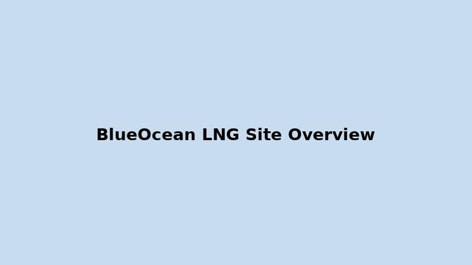
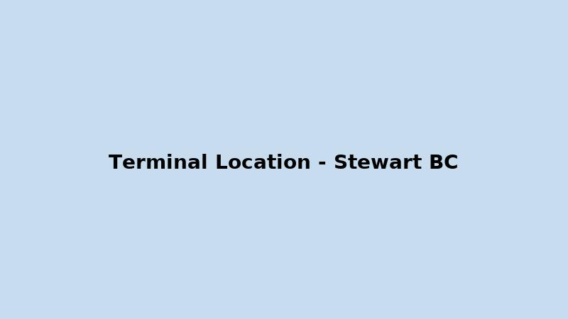

North Coast, British Columbia

BlueOcean Terminals (BOT) has selected an excellent site for an LNG export terminal on the north coast of British Columbia. Explore the sections to learn more about the project, environmental context, pipelines, and shipping advantages.
Our site south of Stewart, BC, features 270 hectares of land and 1.8 kilometers of deep-water shoreline, offering world-class access for LNG carriers without the need for dredging.
